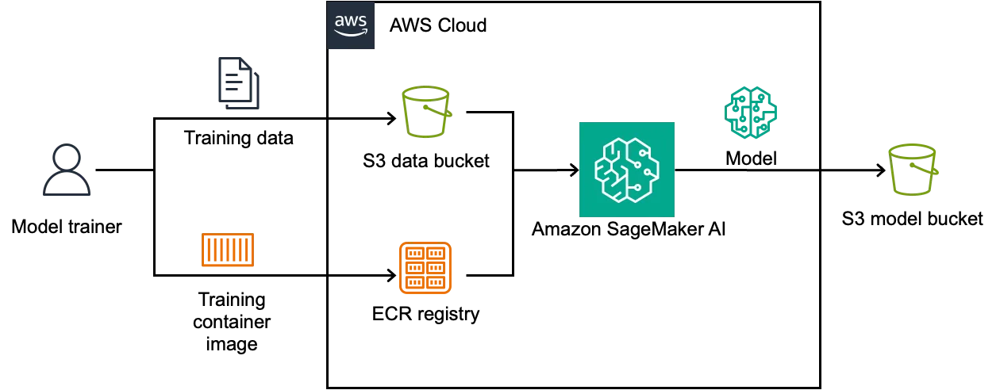

Стандартная схема облачного ML-инференса предполагает, что провайдер хотя бы на мгновение видит данные в открытом виде. Даже если канал передачи зашифрован, внутри вычислительной среды запрос расшифровывается перед подачей в модель. Именно этот момент становится проблемой для медицинских организаций, телеком-операторов и компаний, работающих с коммерческой тайной.
Полностью гомоморфное шифрование (FHE) устраняет этот разрыв математически. Схема позволяет выполнять арифметические операции прямо над зашифрованными данными — результат после расшифровки совпадает с тем, что получилось бы при работе с открытым текстом. Применительно к ML это означает: модель принимает зашифрованный вектор признаков, производит вычисления в зашифрованном пространстве и возвращает зашифрованный результат. Ключ для расшифровки есть только у клиента.
| Подход | Данные во время вычисления | Основа безопасности | Пример реализации в AWS |
|---|---|---|---|
| FHE | Остаются зашифрованными | Математика (Learning With Errors) | concrete-ml + SageMaker AI |
| Доверенная среда (TEE) | Расшифровываются внутри анклава | Аппаратная изоляция и аттестация | AWS Nitro Enclaves |
AWS опубликовала подробное руководство по интеграции библиотеки concrete-ml версии 1.9.0 с Amazon SageMaker ИИ. concrete-ml разработана компанией Zama специально для FHE-инференса и совместима по API с scikit-learn — это означает, что многие существующие пайплайны можно адаптировать без переписывания логики обучения. Библиотека поддерживает несколько классов моделей «из коробки»: линейные классификаторы, деревья решений, градиентный бустинг и нейронные сети с квантизацией.
concrete-ml версии 1.9.0 совместима по API с scikit-learn и поддерживает несколько типов моделей «из коробки», не требуя ручной реализации алгоритмов.

Архитектура решения состоит из трёх частей. Первая — кастомный Docker-контейнер на базе Python 3.12 с зафиксированными версиями пакетов (concrete-ml 1.9.0, concrete-python 2.10.0, torch 2.3.1), который публикуется в Amazon ECR и используется для обучения в SageMaker ИИ. Обучение происходит на открытых данных после нормализации признаков, как правило, к диапазону [-1, 1]. Вторая часть — эндпоинт SageMaker ИИ, развёрнутый из аналогичного контейнера для инференса. Третья — клиентская библиотека, которая шифрует запрос локально, отправляет его на эндпоинт и расшифровывает ответ.
Важно разграничить FHE и конкурирующий подход — доверенные среды исполнения (TEE), которые AWS реализует через Nitro Enclaves. В Nitro Enclaves данные расшифровываются внутри аппаратно изолированного анклава с CPU и памятью, недоступными для гипервизора. Безопасность здесь опирается на аппаратные гарантии и аттестацию. При FHE данные не расшифровываются вообще — безопасность определяется сложностью математических задач (в частности, задачи Learning With Errors). Оба подхода дополняют друг друга и решают разные модели угроз.
Практические сценарии, которые AWS приводит в качестве примеров, охватывают три отрасли. В здравоохранении страховая компания может предоставить врачам облачную модель прогнозирования исходов процедур, не получая доступа к данным пациентов. В энергетике нефтегазовая корпорация может обрабатывать спутниковые снимки чувствительных локаций в облаке, не раскрывая их провайдеру. В телекоме оператор может фильтровать спам в письмах клиентов, соблюдая требования регуляторов о шифровании сообщений у третьих сторон.
Ограничения подхода связаны прежде всего с производительностью: FHE-вычисления значительно медленнее операций над открытым текстом, поэтому на практике применяются квантизованные модели с ограниченной точностью. Кроме того, concrete-ml требует строгого совпадения версий Python, concrete-ml и concrete-python на стороне клиента и сервера — любое расхождение нарушает совместимость зашифрованных данных. Лицензионная политика Zama допускает бесплатное использование для прототипирования и некоммерческих проектов; коммерческое применение требует отдельного соглашения.